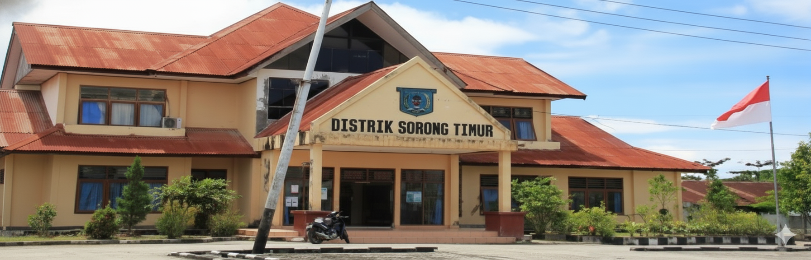

Dari Bumi Malamoi Menuju Pusat Pemerintahan Modern
Distrik Sorong Timur merupakan salah satu distrik strategis di Kota Sorong, Provinsi Papua Barat Daya. Wilayah ini secara historis berakar kuat pada kearifan budaya masyarakat adat Suku Moi yang telah mendiami bentang pesisir, perbukitan, serta aliran sungai di semenanjung kepala burung Pulau Papua sejak ratusan tahun silam.
Nama Sorong sendiri berasal dari kata dalam bahasa Moi yakni "Soren" yang bermakna lautan yang dalam dan bergelombang. Seiring dinamika perkembangan zaman, pemekaran wilayah dilakukan guna mendekatkan rentang kendali pelayanan administrasi kepada masyarakat di kawasan timur kota.
Linimasa Perkembangan Distrik
Pemukiman Adat & Jalur Perdagangan Pesisir
Wilayah Sorong Timur awalnya merupakan wilayah hutan ulayat dan pemukiman adat marga-marga Suku Moi. Wilayah ini menjadi perlintasan penting antara pedalaman daratan Sorong dan pesisir Selat Sele, dengan ekosistem mangrove yang kaya akan sumber daya bahari.
Pembentukan Kota Administratif Sorong
Dengan disahkannya UU No. 45 Tahun 1999 tentang Pembentukan Kota Sorong sebagai daerah otonom, pertumbuhan penduduk di timur kota meningkat pesat. Akses Jalan Poros Km 10 mulai dikembangkan sebagai koridor utama penghubung antar-wilayah.
Pemekaran & Penetapan Distrik Sorong Timur
Pemerintah Kota Sorong menetapkan pemekaran Distrik Sorong Timur untuk mempercepat laju pembangunan dan pemerataan pelayanan publik. Distrik ini secara resmi membawahi 4 kelurahan: Kelurahan Klawuyuk, Kelurahan Klawalu, Kelurahan Kladufu, dan Kelurahan Klamana.
Era Provinsi Papua Barat Daya & Pelayanan Digital PATEN
Seiring disahkannya Provinsi Papua Barat Daya sebagai provinsi ke-38 di Indonesia dengan ibukota di Kota Sorong, Distrik Sorong Timur bertransformasi menjadi salah satu distrik terdepan dalam modernisasi pelayanan publik, pelestarian ekowisata Mangrove Klawalu, dan pemberdayaan ekonomi lokal.
Kantor Distrik Sorong Timur Hari Ini

Gedung Kantor Distrik Sorong Timur yang berlokasi di Jalan Poros Km 10, Kelurahan Klawuyuk, Kota Sorong. Menjadi pusat kegiatan birokrasi, musyawarah pembangunan distrik, dan pelayanan masyarakat.
Jelajahi Profil
Fakta Distrik
- Pemerintahan: Kota Sorong
- Provinsi: Papua Barat Daya
- Jumlah Kelurahan: 4 Kelurahan
- Pusat Kantor: Kel. Klawuyuk
- Suku Asli: Suku Moi
Pertanyaan atau Saran?
Tim kami siap memberikan informasi seputar sejarah, administrasi, maupun potensi wilayah Sorong Timur.
Hubungi Kami